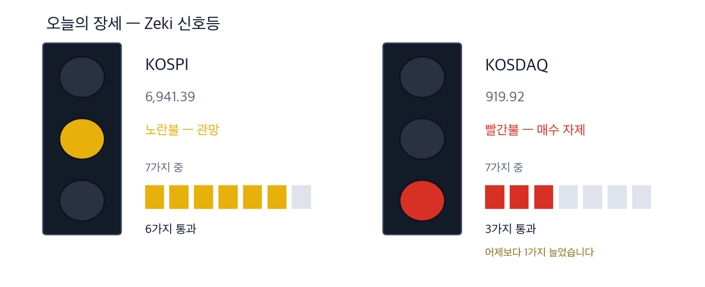

코스피 6,941.39 -0.89% | 코스닥 919.92 +2.98% | 제키 신호등 노란불 |

초록불은 매수 우위, 노란불은 관망, 빨간불은 매수 자제입니다. 칸은 7가지 조건 중 몇 가지를 만족하는지이고, 많을수록 오르는 종목이 넓게 퍼져 있습니다. 6일 종가 기준 코스피는 7가지 가운데 6가지를 만족해 노란불, 코스닥은 3가지로 빨간불입니다. 코스닥은 어제보다 1가지 늘었습니다.
관망 — 신호등이 뜻하는 자세입니다.
6일 서울 증시에서 코스피와 코스닥이 반대로 움직였습니다. 코스피는 0.89% 내린 6,941.39에, 코스닥은 2.98% 오른 919.92에 마감했습니다. 코스닥이 종가로 900을 넘은 것은 7월 1일 이후 3개월 만입니다. (한국경제 10/7자)
코스닥을 끈 것은 반도체 장비, 바이오, 2차전지 업종입니다. 외국인이 1,098억원, 기관이 1,215억원을 순매수했고 개인은 2,145억원을 순매도했습니다. (한국경제 10/7자)
코스피는 삼성전자가 1.09%, SK하이닉스가 3.15% 내려 눌렸습니다. 삼성전자는 8일 3분기 잠정실적을 내놓습니다. 증권사 평균 영업이익 전망치는 3개월 새 113조9877억원에서 106조9435억원으로 내려갔습니다. (매일경제 10/6)
뉴욕에서는 5일 나스닥 종합이 1.05% 올라 27,477.31로 사상 최고치를 썼고, S&P 500은 7,773.95로 마감했습니다. 10년물 국채금리는 5.31%로 올랐고 WTI는 2% 내린 배럴당 89.25달러였습니다. (IBD 10/5)
① 코스닥 반도체 장비주를 봅니다. 주성엔지니어링이 하루 18.2% 올라 1년 최고가를 새로 썼고, 거래량은 50일 평균의 2.6배였습니다.
② 배터리 소재 공급계약이 처음 값에 들어갔습니다. 포스코퓨처엠이 삼성SDI에 6조원어치 양극재를 공급합니다. 두 회사 모두 6일에 올랐습니다.
③ 삼성전자 실적 발표와 상장지수펀드 비중 조정이 8일에 겹칩니다. 코스피는 그 전까지 눌려 있습니다.
숫자 하나는 106조9435억원입니다. 삼성전자의 3분기 영업이익에 대한 증권사 평균 전망치입니다. 8월 113조9877억원까지 올랐다가 원화가 강해지면서 내려왔습니다. 100조원을 넘는 것은 여전히 유력합니다. (에프앤가이드 집계, 매일경제 10/6)
| 날짜 | 무엇을 보는가 | 시장에 어떤 영향 |
|---|---|---|
| 10월 7일(수) | 미국 연준 9월 회의 의사록(15~16일 회의, 한국 시각 8일 새벽) | 위원들이 금리를 더 올리려 했는지가 드러나 국채금리가 먼저 움직입니다 |
| 10월 8일(목) | 삼성전자 3분기 잠정실적과 국내 주식형 상장지수펀드 정기 비중 조정 | 실적이 전망치에 닿는지 드러나고, 비중 조정으로 삼성전자 매물 약 2,000억원이 나올 수 있습니다(삼성증권 추정) |
| 10월 9일(금) | 한글날 휴장 | 이번 주 거래일이 6~8일 사흘로 끝납니다 |
6일 코스닥은 반도체 장비, 바이오, 2차전지 시가총액 상위 종목이 한꺼번에 오르며 2.98% 올랐습니다. 반도체 회사들이 설비투자를 늘리고 있어 장비 업체가 수혜를 입는다는 기대가 붙었습니다.
주성엔지니어링은 반도체 증착 장비를 만드는 회사로, 에코프로비엠을 제치고 코스닥 시가총액 3위가 됐습니다. 증권가는 4분기에도 코스피보다 코스닥이 강하다고 봅니다. 삼성전자와 SK하이닉스의 이익 개선은 이미 값에 들어갔고, 코스닥 상장사의 이익 전망은 내년부터 오를 것으로 보기 때문입니다. (한국경제 10/7자)
| 종가 | 당일 | 한 주 | 20거래일 |
|---|---|---|---|
| 283,000원 | +18.16% | +36.06% | +68.45% |
| 3개월 | 제키 강도 | 고점 대비 |
|---|---|---|
| +24.40% | 99 | 0.00% |
| 누가 | 주성엔지니어링, 반도체 증착 장비를 만드는 코스닥 회사입니다. |
| 무엇을 | 6일 18.16% 올라 283,000원에 마감했습니다. 20거래일 동안 68.45% 올라 1년 최고가를 새로 썼습니다. |
| 언제 | 10월 6일 종가 기준입니다. 이 값이 52주 최고가입니다. |
| 어디서 | 코스닥에 상장돼 있습니다. 하루 거래대금은 약 3,135억원입니다. |
| 왜 | 반도체 회사의 설비투자가 늘면 증착 장비 주문도 늘 것으로 보기 때문입니다. |
| 어떻게 | 6일 거래량은 50일 평균의 2.57배였습니다. 그날 외국인·기관 모두 순매수였습니다. |
포스코퓨처엠이 삼성SDI와 6조원 규모의 장기 공급 본계약을 맺었다고 6일 발표했습니다. 양극재는 배터리의 전기를 저장하는 핵심 소재입니다. 이번에 공급 품목이 리튬인산철(LFP) 양극재까지 넓어졌고, 삼성SDI에 가는 물량은 기존보다 약 45% 늘어날 것으로 회사는 봅니다.
두 회사 모두 6일에 올랐습니다. 같은 날 코스닥에서는 에코프로가 7.31%, 에코프로비엠이 11.41% 올라 2차전지 소재주가 함께 강했습니다. 북미 에너지저장장치(ESS) 수출 기대가 붙었습니다. (한국경제 10/7자)
| 종가 | 당일 | 한 주 | 20거래일 |
|---|---|---|---|
| 209,000원 | +11.88% | +14.46% | +13.71% |
| 3개월 | 제키 강도 | 고점 대비 |
|---|---|---|
| +27.75% | 76 | -29.39% |
| 누가 | 포스코퓨처엠, 배터리용 양극재와 음극재를 만드는 포스코 계열 회사입니다. |
| 무엇을 | 6일 11.88% 올라 209,000원에 마감했습니다. 5월 7일 1년 최고가 296,000원보다 29.4% 낮습니다. |
| 언제 | 삼성SDI와의 장기 공급 본계약을 10월 6일에 발표했습니다. |
| 어디서 | 유가증권시장에 상장돼 있습니다. 하루 거래대금은 약 604억원입니다. |
| 왜 | 공급 품목이 늘어 삼성SDI로 가는 물량이 기존보다 약 45% 늘 것으로 회사는 보기 때문입니다. |
| 어떻게 | 6일 거래량은 50일 평균의 1.90배였습니다. 그날 외국인·기관 모두 순매수였습니다. |
| 종가 | 당일 | 한 주 | 20거래일 |
|---|---|---|---|
| 577,000원 | +9.07% | +9.28% | +7.05% |
| 3개월 | 제키 강도 | 고점 대비 |
|---|---|---|
| +22.64% | 91 | -18.96% |
| 누가 | 삼성SDI, 전기차와 에너지저장장치에 쓰는 배터리를 만드는 삼성 계열 회사입니다. |
| 무엇을 | 6일 9.07% 올라 577,000원에 마감했습니다. 4월 29일 1년 최고가 712,000원보다 19.0% 낮습니다. |
| 언제 | 공급 본계약이 10월 6일에 발표됐습니다. |
| 어디서 | 유가증권시장에 상장돼 있습니다. 하루 거래대금은 약 1,715억원입니다. |
| 왜 | '비금지외국기관'(Non-PFE)에 해당하는 업체에서 양극재를 장기로 받게 돼 공급이 안정되기 때문입니다. |
| 어떻게 | 6일 거래량은 50일 평균의 1.56배였습니다. 그날 외국인·기관 모두 순매수였습니다. |
국민연금이 3분기에 보험 업종 지분을 늘리고 증권 업종 지분을 줄였습니다. 금리가 오르면 채권 위주로 보험료를 굴리는 보험사의 운용수익이 개선된다고 보기 때문입니다. DB손해보험은 1.03%포인트, 한화생명은 1.06%포인트 늘었습니다. 증권주는 키움증권 1.10%포인트, 삼성증권 1.05%포인트, 미래에셋증권 1.04%포인트 줄었습니다. (매일경제 10/6)
값은 따라오지 않았습니다. 6일 기준 DB손해보험은 20거래일 동안 9.8%, 한화생명은 13.6% 내렸습니다. 추세가 아래를 가리켜 오늘은 종목으로 다루지 않습니다. 국민연금 지분율에는 위탁운용사 매매도 섞여 있어 한 곳의 결정만은 아닙니다.
| 종목 | ①20거래일 상승 | ②강도 90↑ | ③외국인 순매수 | ④기관 순매수 | 충족 | 근거의 무게 |
|---|---|---|---|---|---|---|
| 주성엔지니어링(036930) | O | O | O | O | 4/4 | 근거 확실 |
| 포스코퓨처엠(003670) | O | X | X | O | 2/4 | 확인 필요 |
| 삼성SDI(006400) | O | O | O | X | 3/4 | 근거 있음 |
네 칸은 ①20거래일 동안 올랐는가 ②제키 강도가 90 이상인가 ③외국인이 20거래일 순매수했는가 ④기관이 20거래일 순매수했는가입니다. O의 개수가 근거의 무게를 정합니다. 반도체 장비는 값과 돈이 함께 왔습니다. 배터리 소재는 공급계약 뒤 값은 올랐지만 포스코퓨처엠은 외국인이, 삼성SDI는 기관이 20거래일 동안 팔았습니다.
| 종목 | 외국인 · 기관 20거래일 | 거래량 | 어떻게 읽나 |
|---|---|---|---|
| 한온시스템 018880 | 외 -7.0 · 기 +9.9 | 4.36배 | 주의 — 기관만 사고 다른 쪽은 팔았습니다 |
| SFA반도체 036540 | 외 +15.0 · 기 -5.3 | 2.00배 | 주의 — 외국인만 사고 다른 쪽은 팔았습니다 |
| 우리금융지주 316140 | 외 +18.3 · 기 +2.6 | 1.08배 | 확인✓ — 함께 샀지만 거래가 얕습니다 |
| 대한광통신 010170 | 외 +4.3 · 기 +0.8 | 0.77배 | 확인✓ — 함께 샀지만 거래가 얕습니다 |
| 대한항공 003490 | 외 +8.5 · 기 +1.6 | 0.73배 | 확인✓ — 함께 샀지만 거래가 얕습니다 |
| 삼성중공업 010140 | 외 -8.5 · 기 -1.2 | 1.03배 | 관망 — 둘 다 팔지만 거래가 말랐습니다 |
| 대우건설 047040 | 외 -4.8 · 기 -2.9 | 0.76배 | 관망 — 둘 다 팔지만 거래가 말랐습니다 |
| 두산에너빌리티 034020 | 외 -7.0 · 기 -0.7 | 0.72배 | 관망 — 둘 다 팔지만 거래가 말랐습니다 |
| LG디스플레이 034220 | 외 -7.6 · 기 -1.0 | 0.57배 | 관망 — 둘 다 팔지만 거래가 말랐습니다 |
| 넷마블 251270 | 외 -11.2 · 기 -0.2 | 0.42배 | 관망 — 둘 다 팔지만 거래가 말랐습니다 |
| 종목 | 20일 동안 더 산 양(주) | Zeki 강도 | 20거래일 등락 | 기준일 |
|---|---|---|---|---|
| 우리금융지주 316140 | +18,301,153 | 70 | -3.5% | 10-06 |
| SFA반도체 036540 | +15,036,184 | 96 | +106.2% | 10-06 |
| 대한항공 003490 | +8,487,956 | 77 | +7.2% | 10-06 |
| 대한광통신 010170 | +4,267,005 | 99 | +46.1% | 10-06 |
| 고영 098460 | +3,768,765 | 87 | +32.8% | 10-06 |
| 종목 | 20일 동안 더 산 양(주) | Zeki 강도 | 20거래일 등락 | 기준일 |
|---|---|---|---|---|
| 삼성전자 005930 | -20,645,896 | 93 | +9.2% | 10-06 |
| 넷마블 251270 | -11,153,608 | 12 | -6.4% | 10-06 |
| 삼성중공업 010140 | -8,482,317 | 22 | -8.8% | 10-06 |
| LG디스플레이 034220 | -7,565,298 | 13 | -4.5% | 10-06 |
| 한온시스템 018880 | -7,008,865 | 69 | +12.9% | 10-06 |
| 종목 | 20일 동안 더 산 양(주) | Zeki 강도 | 20거래일 등락 | 기준일 |
|---|---|---|---|---|
| 삼성전자 005930 | +16,221,903 | 93 | +9.2% | 10-06 |
| 한온시스템 018880 | +9,890,828 | 69 | +12.9% | 10-06 |
| 맥쿼리인프라 088980 | +4,938,796 | 33 | -1.3% | 10-06 |
| 팬오션 028670 | +3,032,138 | 81 | +1.2% | 10-06 |
| BNK금융지주 138930 | +2,957,750 | 39 | +0.9% | 10-06 |
| 종목 | 20일 동안 더 산 양(주) | Zeki 강도 | 20거래일 등락 | 기준일 |
|---|---|---|---|---|
| SFA반도체 036540 | -5,256,605 | 96 | +106.2% | 10-06 |
| 대우건설 047040 | -2,938,408 | 96 | +6.2% | 10-06 |
| 고영 098460 | -2,336,170 | 87 | +32.8% | 10-06 |
| NAVER 035420 | -1,927,887 | 31 | -7.5% | 10-06 |
| 와이씨 232140 | -1,870,466 | 83 | +54.3% | 10-06 |
기사와 값이 맞아도 자금은 따로 봅니다. 아래 표는 6일 거래량이 넘어야 할 거래량(50일 평균)을 실제로 넘었는지를 답합니다.
| 종목 | 넘었나 | 수급(기준일) | 어떻게 읽나 |
|---|---|---|---|
| 주성엔지니어링(036930) | 2.57배 ✓ | 외 매수 · 기 매수 (10/6) | 관심 — 외국인·기관이 함께 샀고 거래도 늘었습니다 |
| 포스코퓨처엠(003670) | 1.90배 ✓ | 외 매수 · 기 매수 (10/6) | 관심 — 외국인·기관이 함께 샀고 거래도 늘었습니다 |
| 삼성SDI(006400) | 1.56배 ✓ | 외 매수 · 기 매수 (10/6) | 관심 — 외국인·기관이 함께 샀고 거래도 늘었습니다 |
「넘었나」는 6일 거래량을 50일 평균으로 나눈 값이며, 1배를 넘으면 ✓입니다. 세 종목 모두 6일 거래가 평소보다 많았습니다.
| 근거의 무게 | 종목 | KOSPI를 이긴 수 | 지수를 웃돈 폭 | 지수를 밑돈 폭 | 전부 평균 |
|---|---|---|---|---|---|
| 근거 확실 | 16 | 13 / 16 | +8.85%p | -4.35%p | +6.37%p |
| 근거 있음 | 16 | 8 / 16 | +6.63%p | -5.53%p | +0.55%p |
| 확인 필요 | 35 | 11 / 35 | +7.04%p | -4.14%p | -0.63%p |
| 근거 약함 | 1 | 1 / 1 | +7.22%p | 없음 | +7.22%p |
| 근거 없음 | 2 | 0 / 2 | 없음 | -5.15%p | -5.15%p |
| 테마 제외 | 1 | 1 / 1 | +4.40%p | 없음 | +4.40%p |
| 근거 확실 16 | +6.37%p | ||||||
| 근거 있음 16 | +0.55%p | ||||||
| 확인 필요 35 | −0.63%p | ||||||
| 근거 약함 1 | +7.22%p | ||||||
| 근거 없음 2 | −5.15%p | ||||||
| 테마 제외 1 | +4.40%p |
가운데 선이 KOSPI입니다. 오른쪽이 웃돈 것, 왼쪽이 밑돈 것입니다. 이름 옆 회색 숫자는 그 칸의 종목 수입니다.
근거 확실 16종목 가운데 13종목이 KOSPI를 이겼습니다. 이긴 13종목은 평균 8.8%p 웃돌았고, 진 3종목은 평균 4.4%p 밑돌았습니다. 전부 합치면 지수보다 +6.4%p 입니다.
20거래일(약 한 달) 뒤 결과는 10월 14일에 처음 나오고, 차는 대로 이 자리에 표로 더해집니다.
60거래일(약 3개월) 뒤 결과는 12월 9일에 처음 나오고, 차는 대로 이 자리에 표로 더해집니다.
판정. 두 시장 합쳐 60건이 찬 기간마다 미리 정해 둔 방식으로 판정해 그대로 싣습니다. 5거래일 158건 — 지수보다 낫다고 할 수 없습니다. 다만 근거 등급이 높은 종목이 성적도 좋았습니다. (47.5%가 지수를 이겼습니다) · 20거래일 0건 / 필요 60건 · 60거래일 0건 / 필요 60건
| 언제 | 무엇을 보는가 | 무엇을 뜻하는가 |
|---|---|---|
| 개장 30분(09:00~09:30) | 주성엔지니어링이 6일 종가 283,000원 위에서 출발하는가 | 하루 18% 오른 장비주에 돈이 이어서 붙는지 보여 줍니다 |
| 장중 | 포스코퓨처엠 거래량이 50일 평균을 넘는가 | 공급계약 소식에 붙은 돈이 이틀째 이어지는지 보여 줍니다 |
| 마감 30분(15:00~15:30) | 코스닥이 919.92 위를 지키는가 | 6일 종가입니다. 900선 회복이 굳어지는지 보여 줍니다 |
7일 개장에서 코스닥 강세가 이어지는지 봅니다. 8일에는 삼성전자 3분기 잠정실적과 상장지수펀드 비중 조정이 같은 날 나옵니다. 미국 연준 의사록은 7일(현지시간) 나오고, 9일은 한글날로 쉽니다.
This is the Rex Way, ZekiRex™